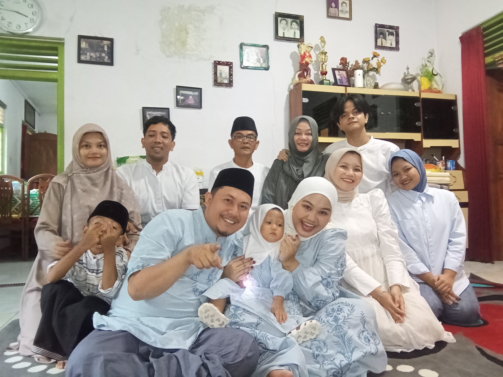

Tentang Kami
Selamat datang di halaman profil keluarga Kurnia Family. Kami adalah keluarga kecil yang tinggal di Kuningan, Jawa Barat. Setiap hari kami berusaha saling mendukung, saling mendengarkan, dan menjadikan rumah sebagai tempat paling nyaman untuk pulang.
Halaman ini dibuat sebagai bagian dari tugas mata kuliah Pemrograman Web di Universitas Kuningan. Semoga melalui halaman sederhana ini, kami bisa memperkenalkan keluarga kami kepada Anda.
Anggota Keluarga
Berikut adalah data singkat seluruh anggota keluarga kami:
| No | Nama | Peran | Tempat, Tanggal Lahir | Pekerjaan / Pendidikan |
|---|---|---|---|---|
| 1 | Kurnia | Ayah | Kuningan, 25-01-1970 | Buruh Lepas |
| 2 | Rumini | Ibu | Kuningan, 13-05-1970 | Ibu Rumah Tangga |
| 3 | Lea Iqbal Meicca Putra | Anak ke-3 | Kuningan, 08-05-2006 | Mahasiswa Sistem Informasi, Universitas Kuningan |
| 4 | Farida | Kakak | Kuningan, 14-04-1994 | Guru |
| 5 | Ine | Kakak | Kuningan, 17-06-1998 | Pekerja Kantoran |
| 6 | Angga | Ipar | Kuningan, 14-04-1995 | Cheff |
| 7 | Marta | Ipar | Kuningan, 07-04-1998 | Pekerja Kantoran |
| 8 | Olivy | Sepupu | Kuningan, 23-07-2007 | Kasir |
| 9 | Okky | Sepupu | Kuningan, 13-09-2000 | Guru |
| 10 | Gyan | Keponakan | Kuningan, 12-04-2018 | Siswa |
| 11 | Raea | Keponakan | Kuningan, 17-05-2025 | Belum Sekolah |
| Total: 11 anggota keluarga | ||||
Kegiatan & Hobi Bersama
Waktu kebersamaan adalah hal yang paling kami hargai.
Kegiatan Favorit
- Makan malam bersama di akhir pekan
- Berwisata ke tempat-tempat alam di sekitar Kuningan
- Memasak makanan khas keluarga
- Beribadah dan mengikuti kegiatan lingkungan
Rutinitas Akhir Pekan
- Bangun pagi dan sarapan bersama
- Membersihkan rumah secara gotong royong
- Berkumpul dan berbagi cerita seminggu terakhir
- Jalan-jalan sore atau menonton film keluarga
Nilai-Nilai Keluarga
Kami memegang teguh beberapa prinsip dalam kehidupan sehari-hari:
- Kejujuran — berkata dan bertindak apa adanya
- Kebersamaan — masalah kecil maupun besar dihadapi bersama
- Kerja keras —
menyerahpantang menyerah dalam berusaha - Rasa syukur — menghargai setiap hal yang kami miliki
Rumus kecil kami: Keluarga = Cinta2 + Doa + Kebersamaan. Dan air minum kami tentu saja H2O.